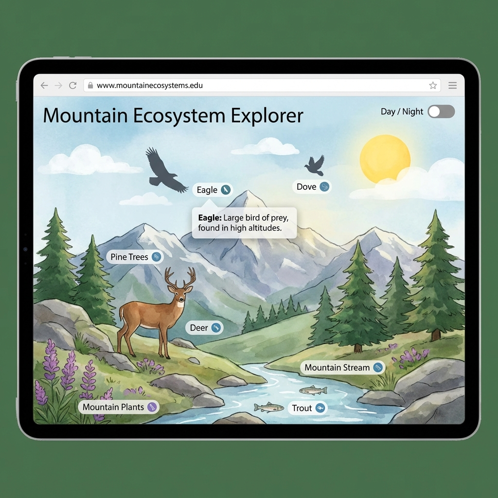

Berg Ecosysteem
Een interactieve educatieve website die gebruikers laat ontdekken hoe een berg ecosysteem functioneert. Met klikbare elementen en een dag/nacht cyclus wordt leren over de natuur een boeiende ervaring.

JAAR
2024
ROL
Interactive Developer
Visual Designer
Tester
DIENSTEN
Interactive Design
Educational Web
Over het project
Een educatieve website over een berg ecosysteem. Je kunt op dieren en planten klikken om meer te leren. Met een dag/nacht knop verander je de hele scene.
Interactie
Elk element in het ecosysteem is klikbaar en geeft informatie via pop-ups. Als je dag naar nacht wisselt, verandert de hele achtergrond mee.
Testen
Ik heb alle klikbare elementen getest en gecheckt of de dag/nacht-wissel goed werkt op verschillende schermen en browsers.